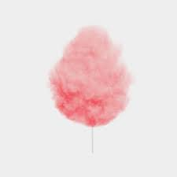

Парк Горького

Истроия о парке
16 марта 1928 года Президиум Моссовета принял постановление об организации на территории ВСХВ парка культуры и отдыха: Признать необходимым устройство в Москве парка культуры и отдыха на территории бывшей сельскохозяйственной выставки, Нескучного сада и Воробьёвых гор и приступить к началу работ по устройству этого парка в текущем году. На устройство парковой зоны Моссовет выделял 200 тысяч рублей, и Госбанк — ещё 500 тысяч. Это должен был быть первый советский парк культуры и отдыха, где планировалось вести широкую политико-воспитательную и культурно-просветительскую работу среди трудящихся, ПКиО стал бы местом «массовой пропаганды советской культуры и пролетарского искусства»
Больше о Первом советском парке культуры и отдыха
